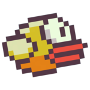
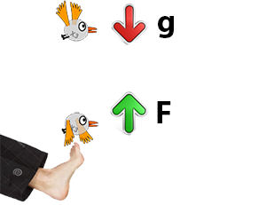
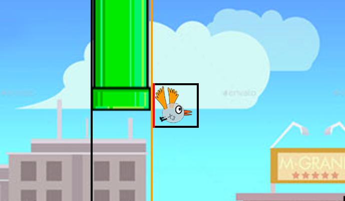
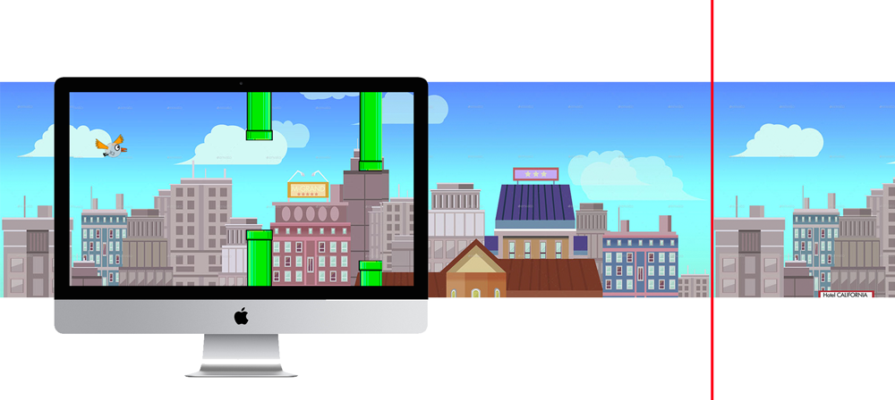

Концепция

- Клон Flappy birds с жизнями и сложностями;
- Бесконечный скролл;
- Разные спрайты и размеры птиц на разных сложностях;
- Техника парного программирования.
Render cycle
Рендеринг - своими словами - процесс получения изображения по модели, в нашем случае моделью являются структуры объектов игры - птицы, трубы, фон. Цикл рендеринга, или render cycle - функция, бесконечно отрисовывающая кадры на контексте (в нашем случае ограничено 60 раз в секунду). Таким образом, количество кадров в секунду (fps) игры будет равен 1/dt, где dt - время рендеринга одного кадра.
Основные этапы цикла рендеринга
- handleInput(dt); - обработка ввода пользователя (клавиатуры, мыши)
- updateEntities(dt); - отработка физики, обновление положения объектов по правилам физического движка или иным правилам
- checkCollisions(); - просчет взаимодействия (столкновений) объектов
- render(); - непосредственная отрисовка спрайтов
- обновление HUD (жизней, очков)
Код цикла рендеринга
function main() {
var now = Date.now();
var dt = (now - lastTime) / 1000.0;
update(dt);
render();
lastTime = now;
requestAnimFrame(main);
};
function update(dt) {
gameTime += dt;
handleInput(dt);
updateEntities(dt);
checkCollisions();
checkPlayerScore();
scoreEl.innerHTML = score;
};
Физический движок

function updateEntities(dt) {
// ......
player.speedY += g * dt; // apply gravity
player.pos[1] += player.speedY * dt;
// ......
}
function handleInput(dt) {
if (input.isDown('SPACE')) {
// ......
player.speedY = impulse; // apply impulse at space
}
}
Физический движок
В реальной жизни при взаимодействии двух объектов (птицы и воображаемой ноги) скорость меняется по закону сохранения импульса. В нашей игре настоящая физика нам не нужна (мы пробовали!), т.к. играть становится слишком тяжело, поэтому при взаимодействии птице просто присваивается некая скорость, направленная вверх, при этом сила гравитации никогда не перестает действовать.
Коллизии
Обнаружение столкновений — вычисление пересечений между собой двух или больше объектов. В нашей игре достаточно вычислить, пересекаются ли между собой боксы объектов.
- если верх B находится ПОД низом А - A находится полностью над B ,или
- верх A находится ПОД низом B - А находится полностью НАД B ,или
- если левая сторона B находится правее правой стороны А - B левее А ,или
- если левая сторона A находится правее правой стороны B - A левее B
При совпадении условий по ИЛИ мы можем говорить, что боксы НЕ пересекаются, и пересекаются в противном случае.
Начисление очков
Для начисления очка игроку на каждом цикле update мы проверяем, не стал ли левый край бокса птицы правее правого края последней трубы

Начисление очков
if (pipes.length) {
const lastPipe = pipes[0];
if (player.lastPipe !== lastPipe &&
player.pos[0] > lastPipe.pos[0]) {
player.lastPipe = lastPipe;
score += 1;
}
}
Как только мы "пролетели" трубу, мы записываем ее в переменную lastPipe объекта игрока, чтобы больше не начислять за ее пролет очки.
Параллакс
Паралла́кс — изменение видимого положения объекта относительно удалённого фона в зависимости от положения наблюдателя (вики).

Параллакс
- Для создания эффекта параллакса мы двигаем фон чуть медленнее, чем весь основной мир (мы остановились на 0.5 скорости мира). Это создает эффект "глубины" при любой скорости птицы.
- Для обеспечения непрерывности скроллинга мы добавляем новый спрайт фона, когда правый край старого (красная линия) равняется с правой границей контекста.
- Не стоит также забывать удалять старый спрайт, как только х-координата его правого края становится меньше нуля, иначе утечки памяти со временем могут стать огромными, особенно при более сложном фоне.
Создание уровней сложности
Уровни сложности в нашей игре различаются
- скоростью полета птицы, а точнее скоростью, с которой мир летит на птицу
- зазором между трубами
- спрайтом птицы
Эти параметры берутся из конфига игры, который подгружается для каждой сложности свой. В итоге мы имеем три конфига с одинаковыми ключами, но разными значениями.
var config = null;
var configEasy = {
worldSpeed: 2,
holeSize: 200,
spriteSpace: 20,
sprite: playerSprites.sprite1,
};
var configMedium = {
// ....
};
var configHard = {
// ....
};
// ....
function init() {
document.getElementById('play-easy').addEventListener('click', function () {
config = configEasy;
}
// ....
thankyou